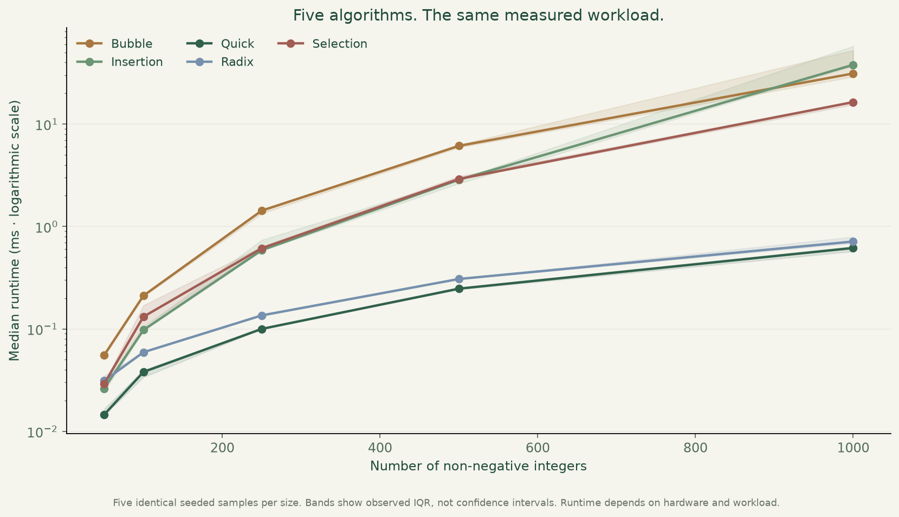
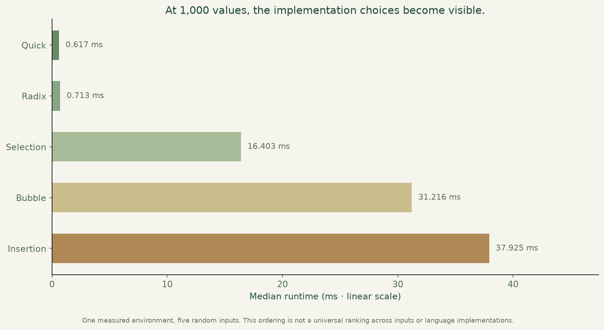
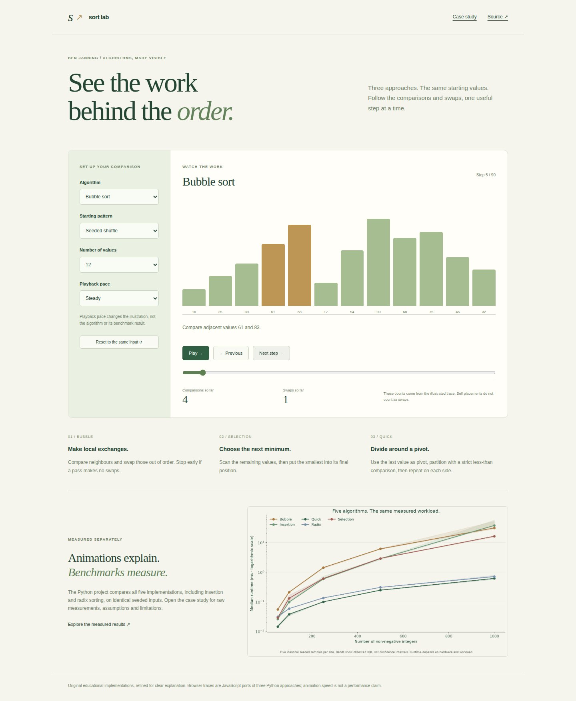

Sorting algorithms, measured.
Measure five sorting implementations, then step through the work behind three of them in a simple interactive explorer.
Interactive browser explanation of three sorting approaches. Playback is illustrative; measured Python benchmarks are presented separately.

What I built
Preserved five original Python algorithms and their confirmed tests, added traceable raw benchmark measurements and built a small browser explorer that shows real algorithm operations.
Why it matters
Two methods can produce the same answer while taking very different amounts of work. Correctness and measurement help make that trade-off visible.
How it works
- 01
Check every measured output against a trusted sorted result and compare five implementations on identical seeded inputs.
- 02
Record raw timings, medians and IQR with implementation hashes and environment details; reuse verified observations when the code is unchanged.
- 03
Step through instrumented bubble, selection and rightmost-pivot quicksort ports on the same starting values.
What it demonstrates
Algorithmic thinking, regression testing, reproducible experimentation and interpreting performance evidence.
Evidence, with context.
Five Python implementations passed correctness checks on 125 measured sorts: five identical seeded random samples at each size from 50 to 1,000. Median and IQR are calculated from saved raw measurements. Measurements were recorded on Windows-11-10.0.26300-SP0 with Python 3.12.2; unchanged algorithm hashes reuse those observations. The browser explorer illustrates operations separately and its animation speed is not a performance measurement.
Verified source: 5a3841b1714b · Tests and visual capture ↗




Scope and limitations
Measurements cover random non-negative integer inputs from 50 to 1,000 in one recorded environment; they do not establish a universal ranking. IQR describes observed variation, not confidence. Rightmost-pivot recursive quicksort has adverse-input recursion limits. Radix supports non-negative integers and rejects booleans/fractions. The browser explorer ports only three approaches and limits inputs to 24 values; animation pace is unrelated to Python runtime.
Visual provenance and source attribution are recorded in the evidence register ↗.
Under the surface.
Architecture, methods and improvements
Seven Python test methods preserve original correctness checks and validate raw timing aggregation, cache provenance and radix input domains. Three Node tests compare final traces with actual Python outputs, check permutation preservation at every step and reconcile known operation counts. The browser workflow exercises completion, controls, reset and mobile layout before publishing screenshots. Selection self placements are shown but do not count as index-changing swaps. Benchmark copies and correctness checks are excluded from measured timing.
Try it locally
Install requirements.txt; run python benchmark_portfolio.py, python plot_portfolio.py and python -m unittest discover -p "test_*.py" -v. Use --refresh to request new measurements. For browser verification, build Python fixtures and docs, npm ci, npm run test:trace and npm run test:browser.
The portfolio is a static GitHub Pages site. Server applications run locally; the portfolio does not collect bookings, credentials or payments.